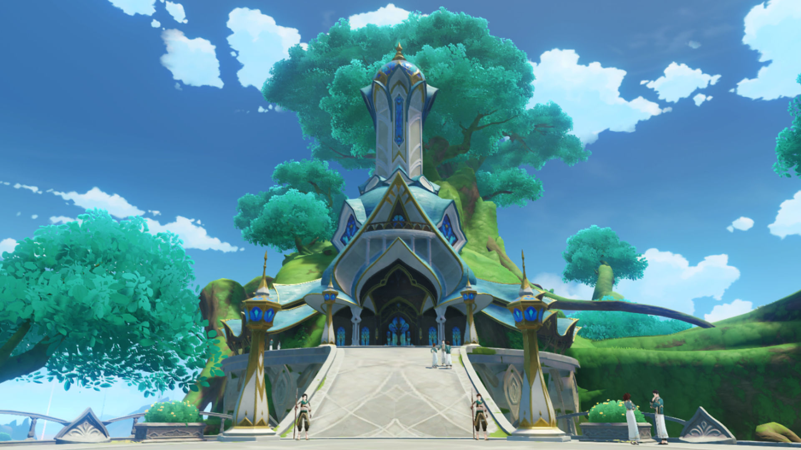
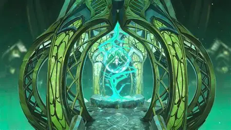
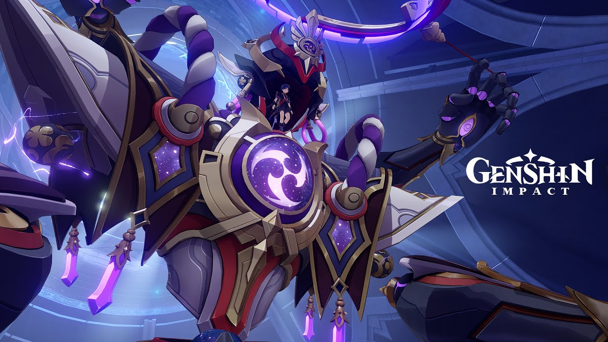
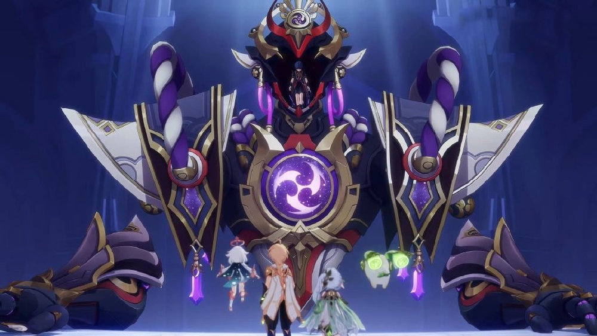
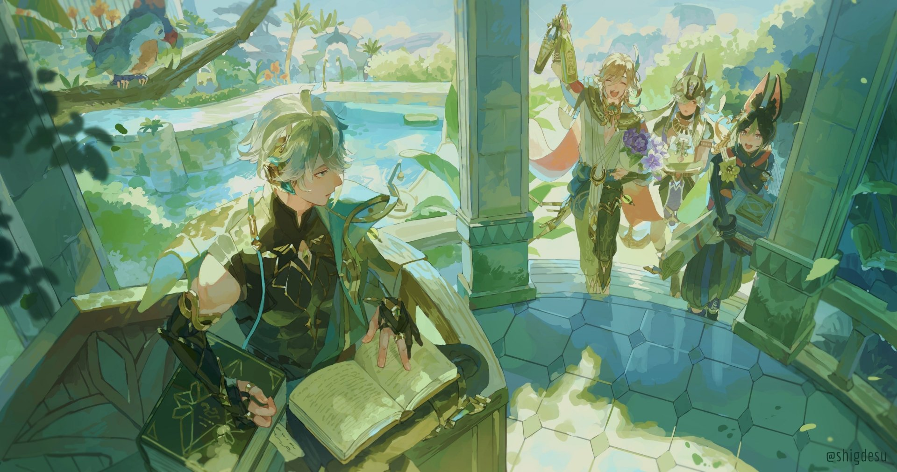

| Historia |
|---|
1.Llegada a Sumeru y el control del Akademiya El Viajero llega a Sumeru buscando respuestas sobre su hermano/a. Pronto descubre que la nación está dominada por el Akademiya, una institución que controla el conocimiento y reprime cualquier pensamiento “no lógico”. La Arconte Dendro, la Pequeña Reina Kusanali (Nahida), está misteriosamente ausente de la vida pública. |
2.Encuentro con Nahida El Viajero conoce a Nahida, quien revela que ha estado encerrada durante 500 años por el Akademiya. Ella explica que los sabios planean crear un “dios perfecto” usando tecnología y conocimientos prohibidos. Nahida pide ayuda al Viajero para detenerlos. |
3. El proyecto del “Dios Sabio” El Akademiya está construyendo un ser artificial llamado Scaramouche, usando la Gnosis Electro robada en Inazuma. Su objetivo es reemplazar a Nahida con un Arconte artificial que obedezca sus órdenes. Los sabios creen que un dios creado por ellos será superior a uno nacido de Celestia. |
4. El desierto y los Eremitas.png)
El Viajero viaja al desierto de Sumeru, donde descubre que los Eremitas y el pueblo del desierto han sido manipulados por el Akademiya. Los sabios usan información falsa para enfrentar a las tribus entre sí y mantenerlas divididas. El Viajero conoce a personajes clave como Cyno, Dehya y Alhaitham, quienes se unen para detener el plan de los sabios. |
5. El ascenso del Dios SabioA pesar de los esfuerzos del Viajero, el Akademiya logra activar a Scaramouche, quien se convierte en el Dios Sabio (Shouki no Kami). Scaramouche obtiene un poder inmenso gracias a la Gnosis Electro y amenaza con destruir Sumeru. Nahida queda atrapada en una red de control mental creada por los sabios. |
6. La batalla contra Scaramouche El Viajero, con la ayuda de Nahida, enfrenta al Dios Sabio en una batalla decisiva. Nahida logra romper el control del Akademiya y libera su verdadero poder como Arconte Dendro. Finalmente, Scaramouche es derrotado y su cuerpo artificial queda destruido. |
7. La verdad sobre el pasado de Scaramouche.jpg)
Nahida accede a los recuerdos de Scaramouche y descubre su historia: fue creado por Ei como un prototipo de marioneta, pero fue abandonado. Su sufrimiento lo llevó a unirse a los Fatui. Nahida decide borrar parte de sus recuerdos para darle una oportunidad de empezar de nuevo. |
8.Caída del Akademiya Los sabios responsables del proyecto son arrestados. Alhaitham se convierte en el nuevo Gran Sabio. Sumeru comienza una nueva era basada en la libertad del conocimiento y la cooperación entre la ciudad y el desierto. |
9. Conclusión del arco de Sumeru.png)
Nahida entrega al Viajero nueva información sobre su hermano/a: él viaja por Teyvat siguiendo un propósito desconocido y ha tomado decisiones que lo alejan del Viajero. Con estas nuevas pistas, el Viajero se prepara para viajar a Fontaine. |
.png)
.png)
.png)
.png)